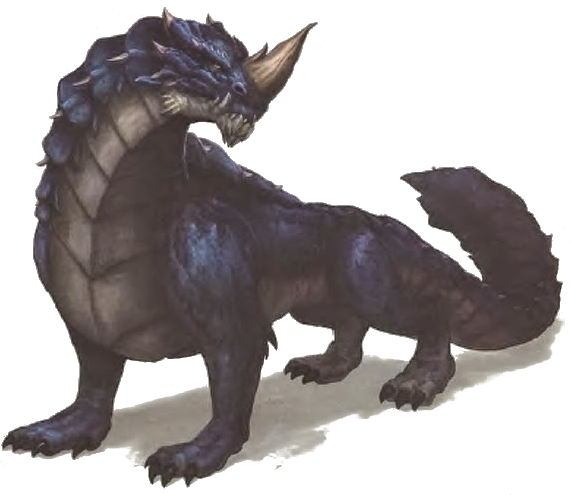

Draco guardian
Dragón mediano, no alineado
Armadura 14 (natural)
Puntos de vida 52 (7d8 + 21)
Velocidad 30 pies
| FUE | DES | CON | INT | SAB | CAR |
|---|---|---|---|---|---|
| 16 (+3) | 11 (+0) | 16 (+3) | 4 (-3) | 10 (+0) | 7 (-2) |
Habilidades Percepción +2
Resistencias a daños Relampago
Sentidos visión en oscuridad 60 pies, Percepción pasiva 12
Idiomas entiende dracónico pero no puede hablarlo
Desafío 2 (450 XP)
Acciones
Ataque multiple. El draco ataca dos veces, una con su cola y otra mordiendo
Mordisco. Ataque con arma de mele: +5 a golpear, alcance 5 pies, un objetivo. Golpe: 7 (1d8 + 3) daño perforante
Coletazo. Ataque con arma de mele: +5 a golpear, alcance 5 pies, un objetivo. Golpe: 6 (1d6 + 3) daño aplastante
